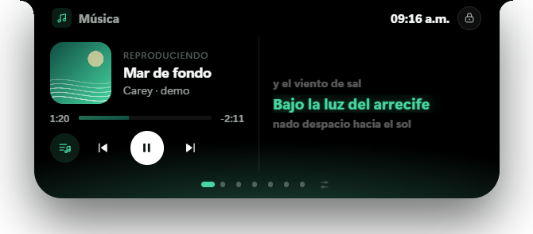
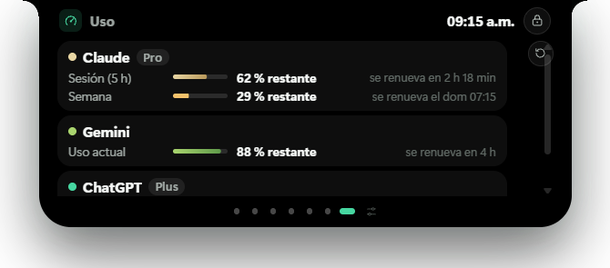
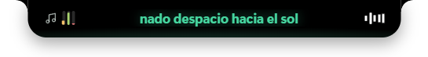
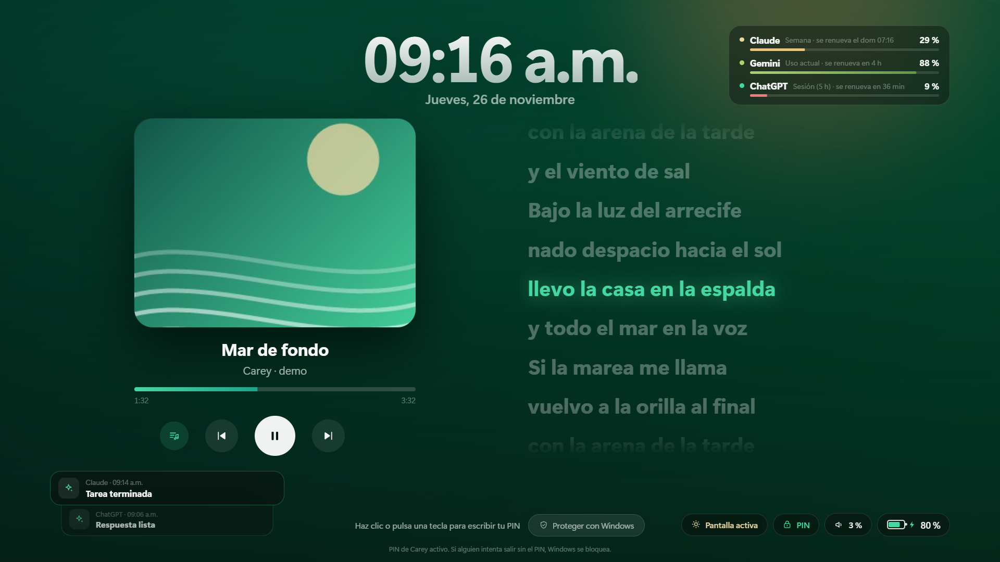
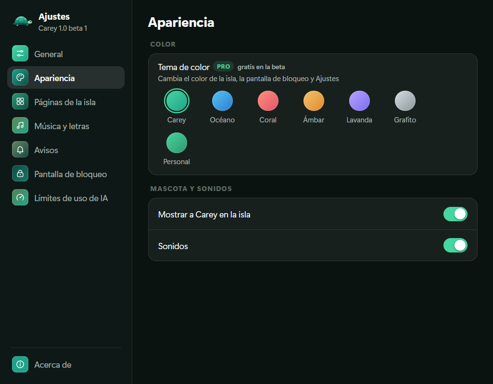

Tu PC, con la isla dinámica y la pantalla de bloqueo que necesitas
Carey es una isla dinámica y una pantalla de bloqueo para Windows. Muestra tu música, los avisos de tus IA y lo que te queda por hacer, sin estorbar.
Windows 10 (2004) o Windows 11 · 64 bits · gratis

Funciones
Lo que Carey hace hoy, en la beta.
-
Isla dinámica
Arriba, al centro. Crece al pasar el ratón: música con carátula, línea de tiempo y controles; avisos de volumen, Bloq Mayús y cargador. Se esconde cuando no tiene nada que mostrar.
-
Letras en vivo
Letras sincronizadas con LRCLIB, en la isla y en la pantalla de bloqueo.
-
Pantalla de bloqueo para dejar tu PC trabajando
Mantiene la pantalla encendida mientras tus IA terminan tareas largas, muestra sus avisos, tiene PIN y un modo estricto que bloquea Windows si alguien intenta salir.
-
Avisos de tus IA
Los avisos de Claude, ChatGPT, Gemini y otras apps importantes, en la isla.
-
Límites de uso de IA
Cuánto te queda de Claude, Gemini y ChatGPT (sesión y semana). Cada uno se activa aparte. Estos servicios no publican sus límites; Carey lee lo mismo que sus páginas de uso y puede dejar de funcionar si cambian.
-
Productividad
Hoy, pomodoro, tareas con recordatorio y agua.
Capturas
-

Página Uso: Claude, Gemini y ChatGPT, con sesión y semana. -

Isla compacta, siempre arriba al centro. -

Pantalla de bloqueo con avisos y letras. -

Ventana de Ajustes.
Pro
Carey será freemium, con un plan de por vida. Las primeras funciones Pro son:
- Temas de color.
- Orden de las páginas de la isla.
- Carátulas propias: una foto o un carrusel con tus fotos.
Durante la beta, las funciones Pro son gratis.
Descargar e instalar
- Descarga
Carey-1.0.0-beta.1-win-x64.zipdesde Releases. - Descomprímelo en una carpeta tuya (por ejemplo, Documentos\Carey).
Carey.exey la carpetawebdeben quedar juntos. - Abre
Carey.exe. Como todavía no está firmado, Windows puede mostrar «Windows protegió tu PC»: pulsa «Más información» › «Ejecutar de todas formas». - La primera vez puede tardar hasta un minuto en abrir mientras Windows revisa el archivo.
Huella SHA-256 del ZIP: C07A4859ACD1986007F243060017A0FB6FA5F92C66FD32F44DA60ECF224D3091. Para comprobarla:
Get-FileHash .\Carey-1.0.0-beta.1-win-x64.zipRequisitos: Windows 10 2004 o posterior, o Windows 11, de 64 bits, con Microsoft Edge WebView2 Runtime (incluido en Windows 11). No hace falta instalar .NET.
Desinstalar: sal desde la tortuga de la bandeja › Salir y borra la carpeta. Los datos quedan en %LOCALAPPDATA%\IslaPrueba y puedes borrarlos a mano.
Preguntas frecuentes
¿Es gratis?
Sí, durante la beta. Después será freemium, con un plan de por vida.
¿Por qué avisa SmartScreen?
Carey todavía no está firmado digitalmente. Pulsa «Más información» › «Ejecutar de todas formas».
¿Envía mis datos?
Carey funciona en tu equipo y no tiene cuentas ni telemetría. Lee el resumen de privacidad para ver qué servicios externos usa.
¿Funciona con Spotify o YouTube?
Funciona con cualquier app que publique la música en Windows. La letra depende de LRCLIB.
¿Cómo reporto un fallo?
En Issues, adjunta el archivo %LOCALAPPDATA%\IslaPrueba\registro.log.